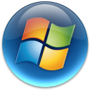

Because I want this project to be natively supported and buildable on a myriad of platforms, I do something the majority of projects don't: having multiple project files for different IDEs available from the outset. This will hopefully enable people with preferred IDEs or editors to keep using them, rather than having to go through a painful porting process.
There are currently three supported ways of building the SBI project:
|  | ||||||
| Visual Studio 2013 | ||||||
| Qt Creator | ||||||
| cbuild |
Operating systems with a question mark have not had attempted builds, but have no foreseen issues if the relevant software dependencies are installed.
Please note this does not include third-party dependencies, and optional entities such as the Qt GUI library (default), which require other tools to be installed.
Visual Studio 2013 can only be run on Windows, so there can be no Linux/Unix support. Win32 is assumed by the source code and project files if Visual Studio is detected. Due to Visual Studio 2012's lack of certain C++11 features, it is not compatible by default; workarounds will likely work, but not be supported.
For specific instructions, see building with Visual Studio 2013.
Requires: Visual Studio 2013 (free Express or paid-for versions ok)
Qt Creator is supported on both Windows and Linux, and as a result the project can be built on either system using this. If using Windows, you will require a compiler: you can use mingw, a cygwin supported tool, etc., or even the CLI tools from Visual Studio 2013 itself. On Linux, install the Clang or GCC C++ compiler.
For specific instructions, see building with Qt Creator.
Requires: Qt Creator 3.1 or newer (Qt 5.3+), C++11 compiler
cbuild is a custom-built build tool, designed to be lightweight, customizable, clean and simple. Written in Ruby, you can customize your projects build process by editing the project ruby script; if you desire changes in the system setup, you can modify the cbuild script directly. As noted before, you will still require a compiler installed for your operating system in order to execute. The build script will need modifying to point to the compiler paths (examples are provided).
For specific instructions, see building with cbuild.
Requires: Ruby 2.0 or newer, C++11 compiler
Don't feel limited by what we have here. There's nothing stopping you from creating a custom makefile, using geany, Code::Blocks, KDevelop, or any other IDE there is out there. Hopefully the documentation for the above three projects will provide sufficient information to tailor your build environment to how you want it. If you do create any other alternatives, please consider sending them to me, and I can add them to the list!